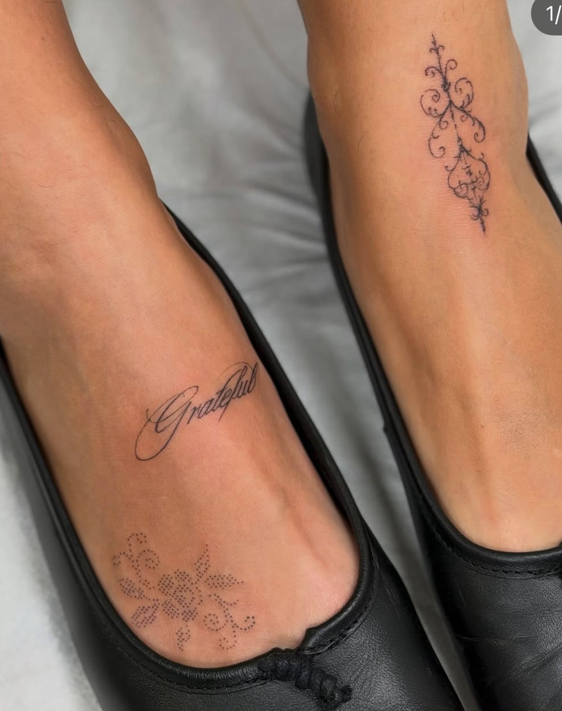
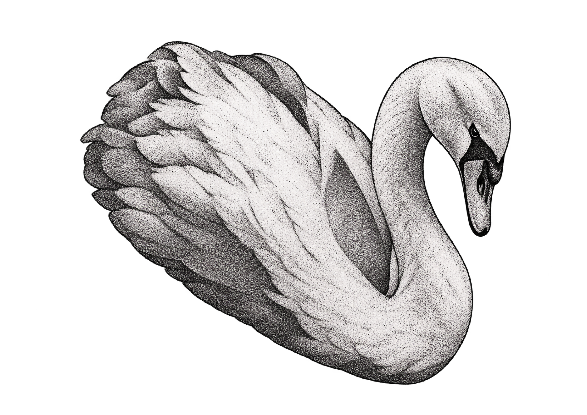
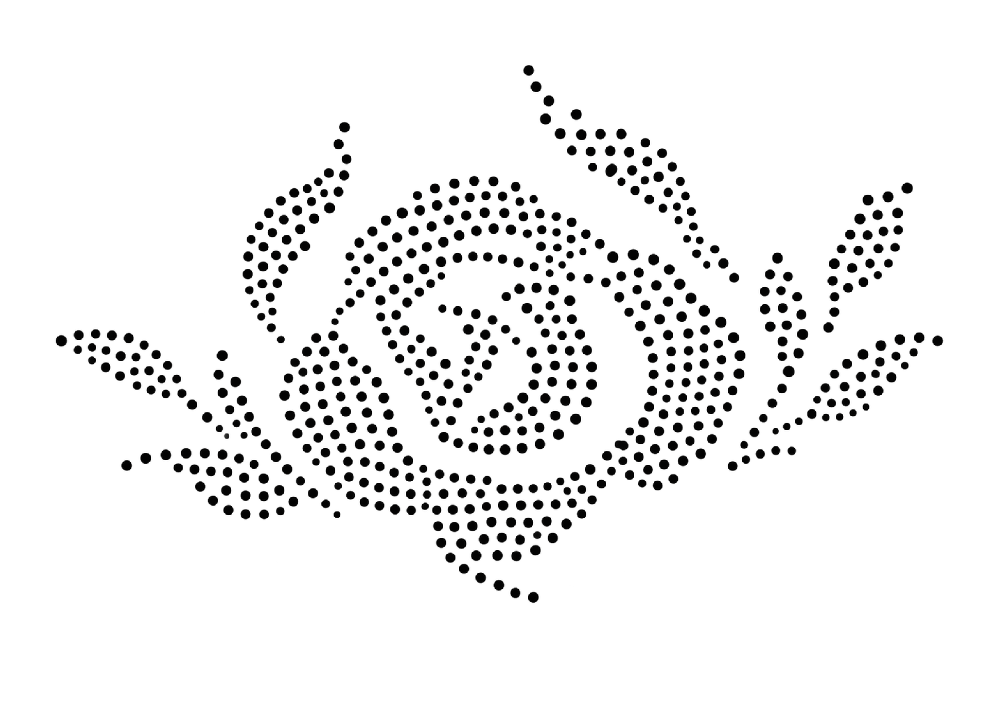
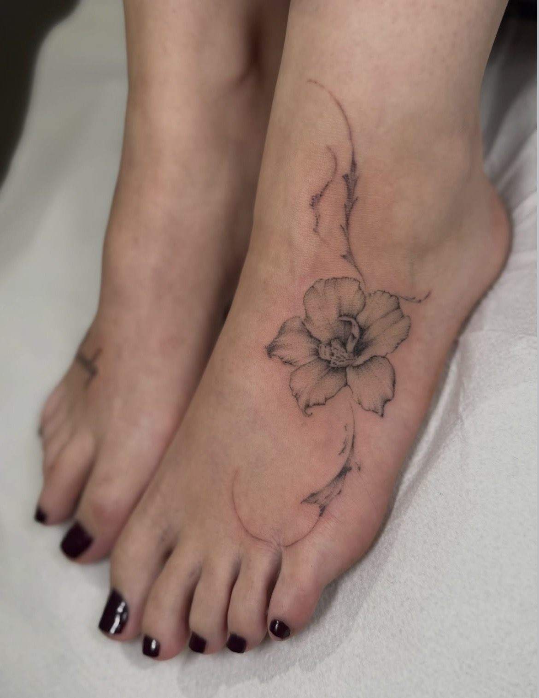
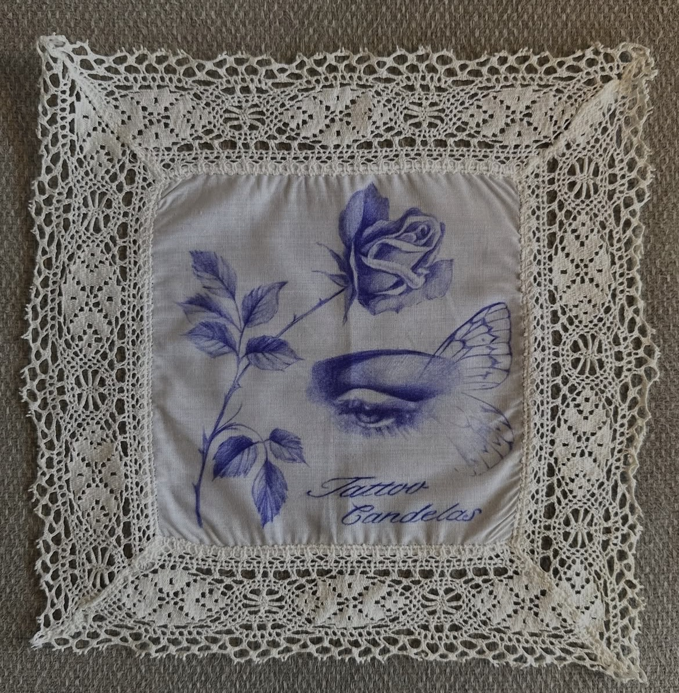
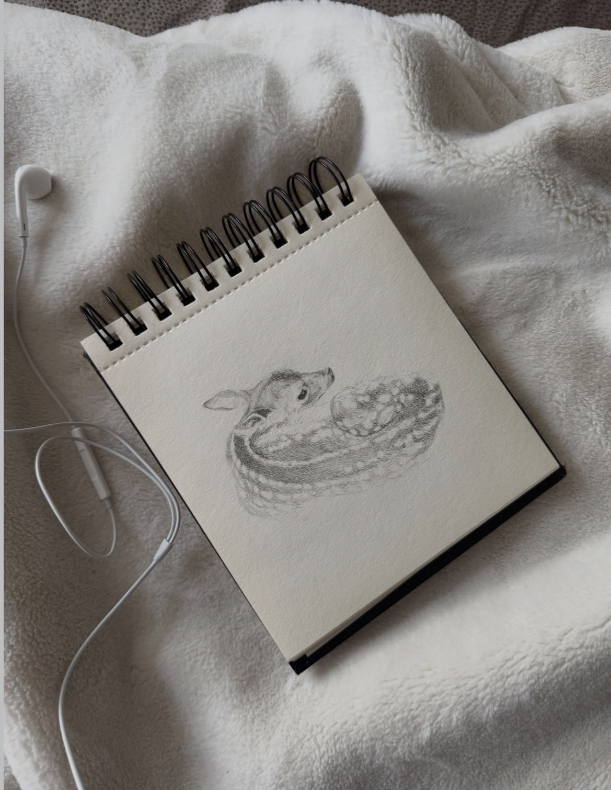
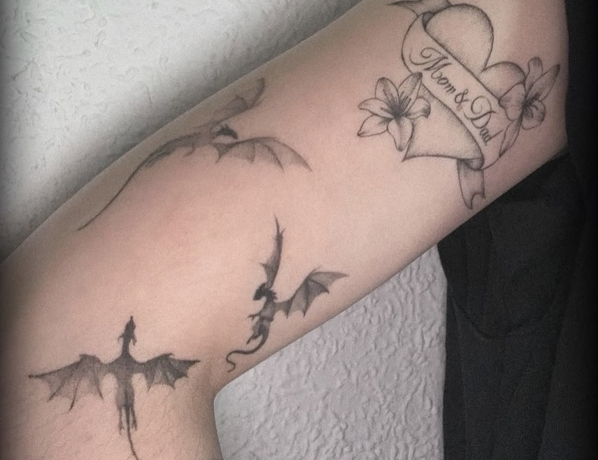
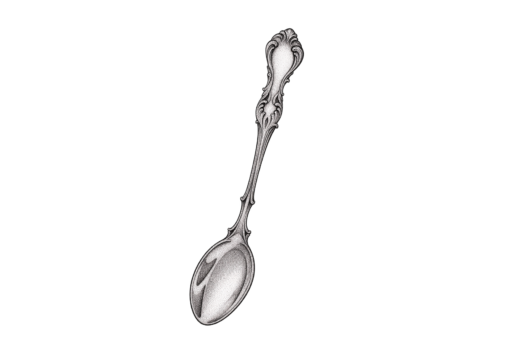

TATTOO ARTIST · MADRID
Ink that
feels like you.
Pequeñas historias sobre la piel. Tatuajes delicados, intuitivos y hechos para acompañarte siempre.
hechos con intención

01 / A little piece of art
La belleza está
en lo sutil.

Creo en los tatuajes que no necesitan hacer ruido para decirlo todo.
En Candela, cada diseño nace de una conversación. Un recuerdo, una idea o una pequeña obsesión se transforman en una pieza pensada para ti. Trabajo desde la delicadeza, el detalle y el respeto por la piel.
Descubre mi manera de trabajar ↗02 — SELECTED WORK
Pequeños detalles,
grandes historias.

Una selección de piezas
hechas con calma y cuidado.

01
02
03
0403 — WHAT I DO
Tu idea, mi trazo.
Nuestra historia.
Desde un pequeño símbolo hasta una composición diseñada desde cero. Cada proyecto se trabaja de forma individual.
Fine line
Líneas delicadas, trazos limpios y detalles sutiles.
Botanical & floral
Flores, hojas y formas orgánicas inspiradas en la naturaleza.
Custom designs
Diseños personalizados creados a partir de tu propia idea.
Lettering & ornamental
Palabras, símbolos y composiciones con carácter propio.
¿TIENES UNA IDEA DIFERENTE? HABLEMOS DE ELLA ↗

A tattoo is a feeling
you choose to keep.
— CANDELA STUDIO, A WAY OF SEEING ART
04 — COME SAY HELLO
¿Lo hacemos
realidad?
Cuéntame qué tienes en mente. Hablaremos de tu idea, buscaremos el diseño perfecto y encontraremos el momento para hacerlo realidad.
Escríbeme por Instagram ↗in the studio
Estudio privado · Con cita previa